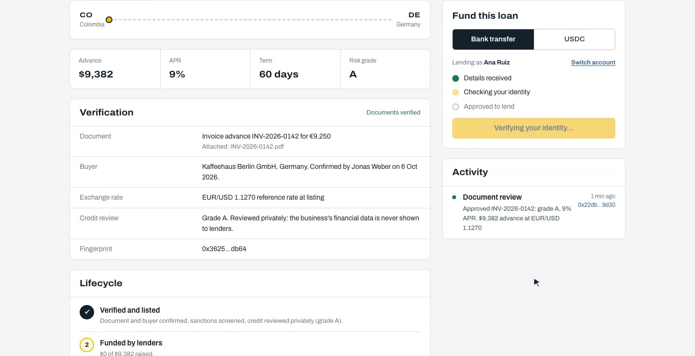
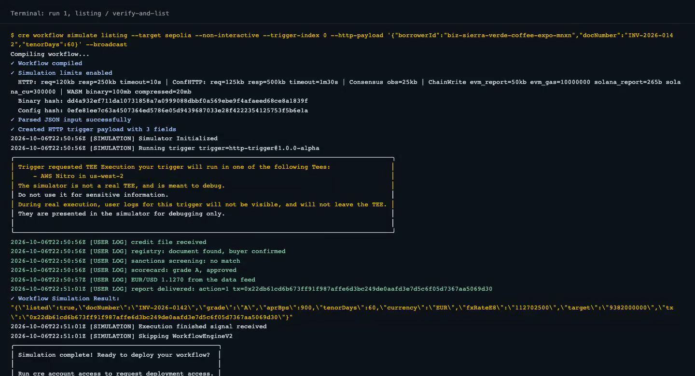
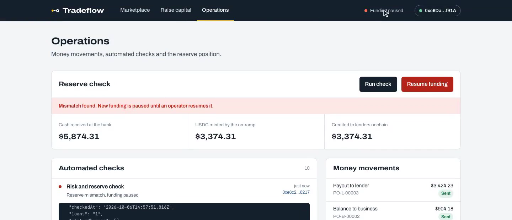
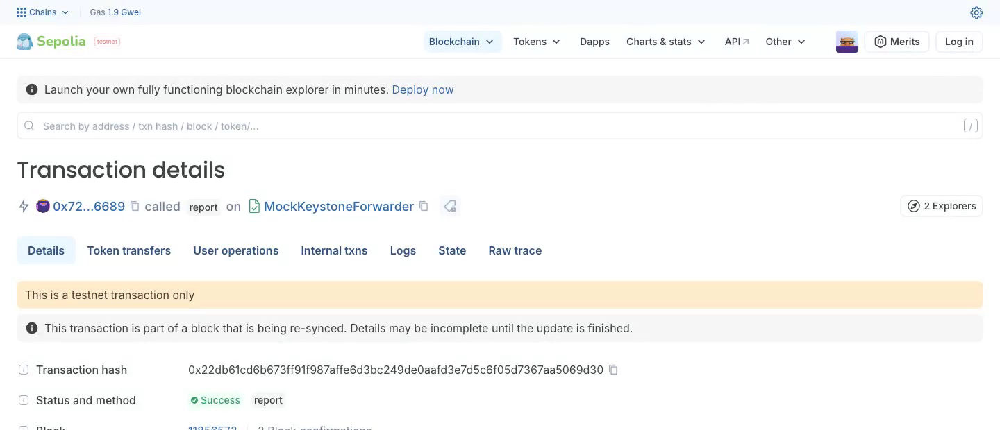

Invoice financing where every off-chain decision is a Chainlink CRE workflow, and every loan is an ERC-3643 token.

Global trade finance gap in 2022. Small exporters are the ones left waiting.
Source: Asian Development Bank, 2023 Trade Finance Gaps, Growth, and Jobs Survey.
Paid when the goods ship, not months later.
Short, document-backed yield. The demo loans priced at 9% and 19% APR.
A fee on each advance.
Is the document real, confirmed and creditworthy? Then list the loan and issue its token.
Is the lender verified? Did the bank deposit really arrive at a fair rate?
Pay the business once funded. Mark it repaid only when the bank and the processor agree.
Late loan? Freeze the business and pause its token. Books out of balance? Pause all funding.
Four workflows, seven handlers. Each decision lands onchain as a signed report through the CRE forwarder.
Stays in the enclave (handlerInTee, AWS Nitro)
Only the verdict leaves

The same run in the CRE CLI: the handler requests AWS Nitro, the simulator runs it locally and says so, then the signed report lands on Ethereum Sepolia.

The bank booked a deposit that never reached the chain: the monitor paused new funding onchain.
cre workflow simulate --broadcast run that writes a real Sepolia transaction.github.com/Maadhav/tradeflow

Built by CodeDecoders, the team behind GSOS.
Maadhav Sharma, Founder & CEO